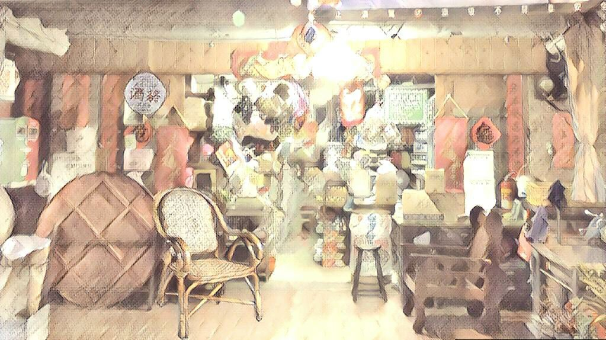

舊情綿綿——我看「老街人物系列」

舊情綿綿——我看「老街人物系列」
蕭義玲(中正大學中文系教授)
今日到故事柑仔店逛逛，店內故事品項繁多，樣樣新奇。不過「老街人物系列」前一番探看，短短五百多字，竟如月光寶盒打開，引人駐留。
老街上發生了什麼？有什麼故事？
〈新嫁娘扇子〉，透過一把三十年前女人出嫁時未從娘家丟棄的扇子，雖已破舊至一道道千絲萬縷的裂縫，仍在手上扇著扇著不忍丟，寫出女人與「家」的依戀，然而女人的「家」是娘家或夫家？這一問，便有離開與回返的辯證了。以故，三十年前出嫁的女人，到女人生了女兒，女兒又生了孩子，仍頻頻抱孩子回娘家，代代繁衍的情感所向，便走出了老街永不消逝的溫熱；至〈阿蓮的女兒〉，則透過一家老中藥行、老中醫師，以及一帖帖中藥，讓女兒重憶「家」的味道，帖帖中藥恍如普魯斯特的瑪德琳餅乾，給了女兒回到母親身旁的線索。
至於〈阿五繡學號〉便是悲傷的故事了，對操持繡學號舊業的阿五而言，老街，是她情感的創傷之地：一個拋棄她的男人與留不住的孩子，而繡學號，便如一組專屬於阿五的傷害符碼，針針刺入心中。
然則老街雖是傷痛發生地，但老街之「老」，也同時意味著承載傷痛的能力，一天一天，阿五繡著繡著，終於也能為自己未面世的孩子，繡出情感名號了。
而〈老李的茶攤〉、〈吧噗〉則生動地以兩代人間的交流，寫出所有人的老街記憶：不管是茶攤或吧噗攤，總有一些人(他們或叫老李、老王、老林……)，以我們鍾愛之物(或一杯紅茶，或一隻吧噗……)，為我們把守童年的閘門。讓我們在多年以後，仍可以「回到老街」之名重溫往日，不管是璀璨琉璃的童年，或耀如春光的年少，同時讓我們憶起，在老街的某一轉角中，曾有人如許溫柔地寬待過我們，像〈吧噗〉中的小男孩，原本只有買半球的錢，但卻被慷慨地給予了一大冰球——那老街轉角便將直抵我們的心了。
是以，我想，每個人心中總有一條正在走著，或留存記憶的老街，它們或許難耐時間的磨損而漸漸老著，無聲無息著，「故事柑仔店」的說故事使命便在此顯現魔力了。
或如柑仔店老闆說的：「所幸，老東西身上的「故事」，有機會擺脫物理宿命的糾纏，在人的記憶中傳遞著，就算他們早已不在，故事將成為一座彼岸的燈塔，讓此岸的人得以記起他們依稀的樣貌。」更不要說，故事柑仔店還以〈語巫故事報〉把老街遊覽地標畫得一清二楚，讓我們走著走著，走入內心深深處，舊情綿綿。
故事喚起了故事，寫著寫著，我也想起小學時，常常特意拿著大鍋到隔壁去買小碗的牛肉湯麵，帶著外省腔調的老闆伯伯看了我帶的大鍋，心領神會，便在小碗的分量外，又多加了好幾瓢牛肉湯，讓我心滿意足地端回家。
現在想來，那真是慷慨的贈與了；再說一事：中學時，我曾在老家路口遺失一只流星雨的少女錶，尋之不著的那些時日如喪家之犬，不久後，老家附近被開闢成新社區，幾年之中，舊人舊物紛紛星散，而今憶起，那尋不著的街口便如青春年少，都恍如昨日了。
趕快來「故事柑仔店」看故事、聽故事、說故事。